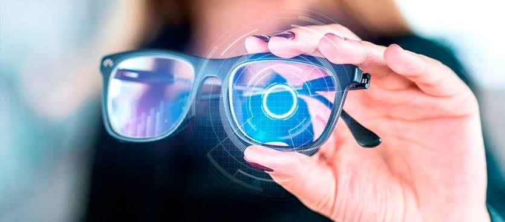

Tratamentos
Tecnologia a serviço da visão
Tecnologia a serviço da visão
• Pra quem trabalha ou estuda pelas telas do computador e celular;
• Conforto ocular;
• Melhor qualidade do sono;
• Diminuição do cansaço dos olhos;
• Redução de dores de cabeça;
• Prevenção a longo prazo da saúde da retina, como catarata e degeneração macular, principalmente
para as pessoas que
passam muitas horas na frente das telas.
• Maior conforto para enxergar;
• Proteção contra os raios ultravioletas;
• Pode ser usada com ou sem grau;
• Melhora na produção de melatonina (hormônio que regula o sono);
É possível que as lentes sejam usadas com ou sem grau e em qualquer fase da vida, inclusive nas crianças. A lente de filtro luz azul é ideal para quem fica muitas horas em frente a telas, seja de computador como também de celular.

Atualmente, ficar muitas horas olhando para telas de computador ou celular é uma atividade comum,
porque a tecnologia
está ligada ao trabalho, ao estudo e até mesmo ao lazer, com games. As longas horas olhando para as
telas de
dispositivos eletrônicos podem gerar cansaço nos olhos, causados pela
exposição à luz azul emitida
por esses aparelhos.
Para evitar incômodos e até sérios problemas visuais, é recomendado o uso de óculos com
lentes de
filtro luz azul,
porque essa lente impede que a luminosidade artificial cause danos ao globo ocular.
A luz azul é importante porque é responsável por avisar nosso corpo que está na
hora de acordar.
Mas, o contato
excessivo pode ser bem prejudicial aos nossos olhos.
De maneira geral, existem dois tipos de luz azul:
• Luz azul turquesa: Está presente na luz natural do sol, que ajuda em nosso ciclo circadiano
(relacionado ao sono), é considerada boa para nossa visão.
• Luz azul violeta: Está presente nas luzes artificiais de LED, celulares, computadores e
diversos
dispositivos
digitais. O contato excessivo pode atrapalhar nosso sono e causar fadiga ocular.
O óculos com filtro de luz azul funciona absorvendo a luz violeta, que é
prejudicial aos nossos
olhos e corpo,
permitindo que somente a luz boa chegue em nossa retina, melhorando nosso bem estar
visual. Veja a
ilustração a seguir para entender melhor:
Além de proteger os olhos da luz azul, as lentes com este tratamento contém filtro contra os raios UV, que podem atingir a visão tanto em ambientes internos quanto externos. Portanto, também preserva o globo ocular dos danos provocados pela radiação solar.
Uma das principais vantagens do óculos com filtro de luz azul é que ele
pode ser feito com ou sem
grau. Então, se você não precisa de modelito de grau, mas quer proteger seus olhos da
luz azul,
saiba que é possível.
As lentes com filtro azul vão proporcionar melhor conforto visual independente de você ter ou não
alguma dificuldade
para enxergar.
Ótica Florença - CNPJ: 23.398.421/0001-18
Resp. Técnico - Mariano Guglielmi